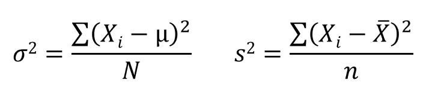
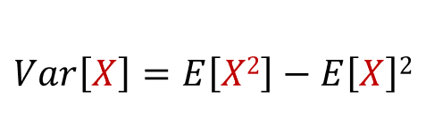

For this proof, these variables will be used:
The population variance and the sample variance are calculated using the formula below:
In many practical situations, the true variance of a population is not known a priori and must be computed somehow. When dealing with extremely large populations, it is not possible to count every object in the population. Lets try to derive an equation for the expected value of the population variance, E[σ^2], using the sample mean rather than the population mean, and using the size of the sample n rather than the population size N:
Since E[cX] = c*E[X], then we get:
We can simplify this equation: